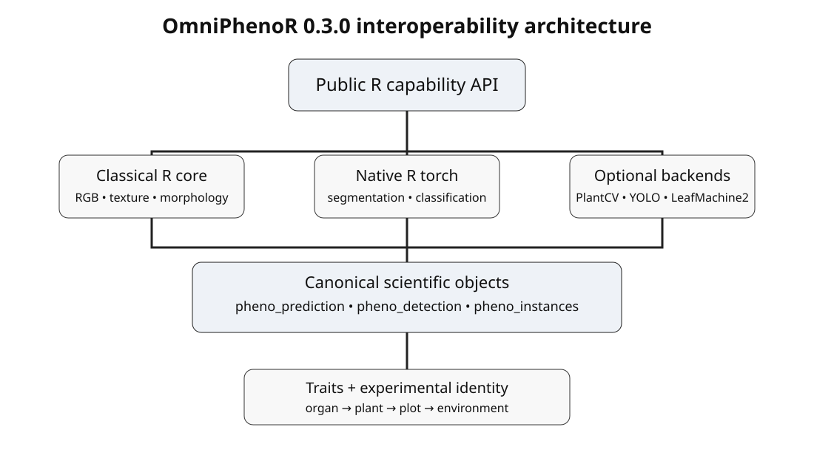

OmniPhenoR and PlantCV: Adapter-Based Plant Image Analysis
Source:vignettes/v14-plantcv-integration.Rmd
v14-plantcv-integration.RmdPurpose
PlantCV is a mature open-source Python project for plant phenotyping and image analysis. OmniPhenoR 0.3.0 does not attempt to reimplement the PlantCV ecosystem. Instead, it provides a narrow adapter boundary that converts PlantCV-derived masks or measurements into canonical OmniPhenoR objects. This lets downstream morphology, disease, texture, identity, and reporting code remain unchanged. PlantCV v4 is described as an image-analysis platform for high-throughput plant phenotyping (Schuhl et al. 2026).

1. Check before use
pheno_plantcv(task = "status")
#> # A tibble: 1 × 6
#> backend module available version initialized note
#> <chr> <chr> <lgl> <chr> <lgl> <chr>
#> 1 plantcv plantcv NA NA FALSE Python not initialized; module …
pheno_backend_info("plantcv")
#> # A tibble: 1 × 8
#> backend_id language package task output_class license status
#> <chr> <chr> <chr> <chr> <chr> <chr> <chr>
#> 1 plantcv Python plantcv plant image analysis pheno_predict… MPL-2.0 exper…
#> # ℹ 1 more variable: install_automatic <lgl>The status call is intentionally conservative. It does not install PlantCV.
2. Adapter-first design
PlantCV workflows often contain crop-, organ-, camera-, and acquisition-specific preprocessing. Hard-coding one workflow into the package would imply a false universality. The recommended integration therefore accepts a user-supplied adapter.
plantcv_like <- function(img) {
# In a real study this function may call PlantCV through reticulate.
pheno_segment(img, index = "ExG")
}
pred <- pheno_plantcv_segment(
pheno_data("leaf_rgb"),
adapter = plantcv_like,
image_id = "leaf_001"
)
pred
#> <pheno_prediction>
#> engine: plantcv_adapter device: cpu
#> classes: background, foreground
#> mask dimensions: 96 x 128The returned object is a pheno_prediction, so the rest
of the analysis is ordinary OmniPhenoR code.
pheno_morphology(pred$mask)
#> # A tibble: 1 × 13
#> object_id area_px perimeter_px centroid_x centroid_y bbox_width_px
#> <int> <int> <int> <dbl> <dbl> <dbl>
#> 1 1 2872 264 64.5 48.5 92
#> # ℹ 7 more variables: bbox_height_px <dbl>, equivalent_diameter_px <dbl>,
#> # circularity <dbl>, aspect_ratio <dbl>, eccentricity <dbl>,
#> # major_axis_px <dbl>, minor_axis_px <dbl>3. Built-in minimal route
For basic RGB files, an experimental route can call a locally installed PlantCV module. It uses a simple color-space conversion plus Otsu thresholding. This is intentionally narrow and should be considered a starting point, not a universal phenotyping method.
pheno_plantcv_segment(
"leaf_photo.png",
object_type = "light",
image_id = "plant_17_leaf_03"
)Before running this code, validate the environment deliberately:
pheno_python_require("plantcv", action = "declare")
pheno_python_validate("plantcv", initialize = TRUE)4. Scientific comparison with the native route
A PlantCV-derived mask should be compared against an independent annotation or physical reference, not merely accepted because the backend is established.
truth <- pheno_data("leaf_mask")
img <- pheno_data("leaf_rgb")
native <- pheno_segment(img, "ExG")
plantcv_demo <- pheno_plantcv_segment(img, adapter = plantcv_like)
pheno_compare_segmentation(
truth,
native = native,
plantcv = plantcv_demo
)
#> # A tibble: 2 × 14
#> method tp tn fp fn iou dice precision recall specificity f1
#> <chr> <int> <int> <int> <int> <dbl> <dbl> <dbl> <dbl> <dbl> <dbl>
#> 1 native 2872 9416 0 0 1 1 1 1 1 1
#> 2 plantcv 2872 9416 0 0 1 1 1 1 1 1
#> # ℹ 3 more variables: balanced_accuracy <dbl>, area_bias <dbl>,
#> # boundary_disagreement <dbl>A useful analysis asks two questions:
- How different are the masks?
- Does the difference materially change the final phenotype?
pheno_compare_segmentation(
truth,
native = native,
plantcv = plantcv_demo,
phenotype_fun = mean
)
#> # A tibble: 2 × 17
#> method tp tn fp fn iou dice precision recall specificity f1
#> <chr> <int> <int> <int> <int> <dbl> <dbl> <dbl> <dbl> <dbl> <dbl>
#> 1 native 2872 9416 0 0 1 1 1 1 1 1
#> 2 plantcv 2872 9416 0 0 1 1 1 1 1 1
#> # ℹ 6 more variables: balanced_accuracy <dbl>, area_bias <dbl>,
#> # boundary_disagreement <dbl>, phenotype_estimate <dbl>,
#> # phenotype_truth <dbl>, phenotype_bias <dbl>The second comparison is often more important in agronomic interpretation.
5. Leaf morphology bridge
pheno_plantcv_morphology(img, adapter = plantcv_like)
#> # A tibble: 1 × 13
#> object_id area_px perimeter_px centroid_x centroid_y bbox_width_px
#> <int> <int> <int> <dbl> <dbl> <dbl>
#> 1 1 2872 264 64.5 48.5 92
#> # ℹ 7 more variables: bbox_height_px <dbl>, equivalent_diameter_px <dbl>,
#> # circularity <dbl>, aspect_ratio <dbl>, eccentricity <dbl>,
#> # major_axis_px <dbl>, minor_axis_px <dbl>This function deliberately uses OmniPhenoR’s canonical morphology
engine after segmentation. The advantage is comparability across
engines: the same area and shape definitions can be applied to masks
produced by native thresholding, R torch, PlantCV, or other
backends.
6. Recommended study design
For a controlled leaf-area study:
- define image acquisition and calibration independently of treatment outcomes;
- reserve manually annotated leaves spanning size, color, and lighting conditions;
- compare PlantCV and at least one transparent baseline;
- quantify area bias, not only Dice/IoU;
- inspect failures visually;
- freeze the chosen adapter and record its code hash;
- apply the same workflow to all experimental units.
For disease phenotyping, validate the healthy-tissue/lesion definition separately. A high-quality whole-leaf mask does not guarantee accurate lesion segmentation.
7. External PlantCV workflow pattern
The most reproducible pattern for a complex workflow is to keep the PlantCV analysis in a dedicated Python script and expose a stable R adapter.
plantcv_adapter <- function(path) {
# reticulate::source_python("analysis/plantcv_pipeline.py")
# output <- plantcv_pipeline(path)
# convert output to a binary matrix
output
}
pred <- pheno_plantcv_segment(
"data/plant_001.png",
adapter = plantcv_adapter
)The Python script can evolve independently while the R-facing result remains a canonical mask.
8. Provenance
Record:
| Item | Example |
|---|---|
| image id | plant_001 |
| PlantCV version | local environment |
| Python executable | explicit path |
| workflow script | hash or repository commit |
| segmentation settings | threshold/channel/filter sizes |
| input image hash | SHA-256 |
| output mask hash | SHA-256 |
9. Common mistakes
- Installing PlantCV automatically during package installation.
- Assuming one PlantCV threshold pipeline generalizes to all crops.
- Mixing PlantCV morphology definitions with OmniPhenoR morphology without documenting the difference.
- Choosing segmentation parameters because they maximize a treatment effect.
- Failing to keep the experimental identity attached after batch processing.
10. Interpretation example
Suppose PlantCV and the native ExG method have similar Dice, but PlantCV systematically underestimates leaf margins by 3%. If the scientific endpoint is leaf area, the 3% bias may matter more than the small difference in Dice. Conversely, if the endpoint is lesion severity restricted to the interior leaf area, boundary disagreement may be less consequential. Validation should therefore target the derived trait.
Final perspective
The PlantCV integration is intentionally modular. PlantCV remains the specialist image-analysis engine; OmniPhenoR supplies canonical outputs, cross-engine comparison, provenance, experimental identity, and a stable R-facing workflow.